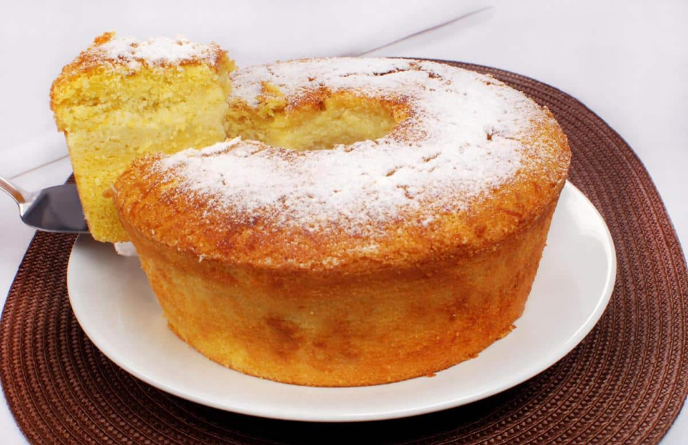

Receita bolo de fuba

Ingredientes
- 1½ xícara (chá) de fubá mimoso
- 1 xícara (chá) de farinha de trigo
- 2 xícaras (chá) de açúcar
- 4 ovos
- 1 xícara (chá) de óleo
- 1 xícara (chá) de leite
- 1 colher (sopa) de fermento em pó
- 1 colher (sopa) de sementes de erva-doce
- 1 pitada de sal
- manteiga e farinha de trigo para untar e polvilhar
Modo de preparo
- Preaqueça o forno a 180 ºC (temperatura média).
- Com um pedaço de papel toalha (ou pincel), unte com manteiga
uma fôrma de bolo, com furo no meio, de 25 cm de diâmetro
tente fazer uma camada bem fina. Polvilhe com farinha e
chacoalhe bem para espalhar. Bata sobre a pia para retirar o excesso.
- Numa tigela separada, quebre um ovo de cada vez e transfira para
o copo do liquidificador - se um estiver estragado você não perde
toda a receita. Junte o óleo, o açúcar e o leite. Bata até ficar liso, por cerca de 5 minutos.
- Transfira a mistura para uma tigela grande. Junte o fubá e a
farinha, passando pela peneira. Com um batedor de arame, mexa
delicadamente até a massa ficar lisa. Por último misture o fermento, as sementes de erva-doce e o sal.
- Despeje a massa do bolo na fôrma untada e nivele com uma
espátula. Leve ao forno preaquecido e deixe assar por cerca de 30
minutos. Para saber se o bolo está assado: espete um palito na
massa, se sair limpo é sinal que o bolo está pronto; caso contrário, deixe por mais alguns minutos até que asse completamente.
- Retire do forno e deixe esfriar por 15 minutos antes de desenformar. Sirva em temperatura ambiente.
Não deixe estragar
Corte o bolo em fatias individuais e leve ao congelador numa
assadeira até endurecer. Depois, coloque em saquinhos plásticos e
armazene no congelador. Para descongelar, coloque as fatias ainda
congeladas na torradeira, no forno, no microondas ou deixar por algumas horas na geladeira.